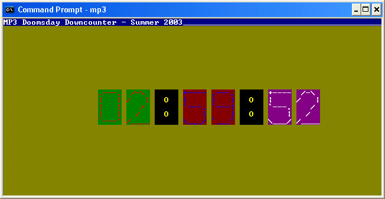
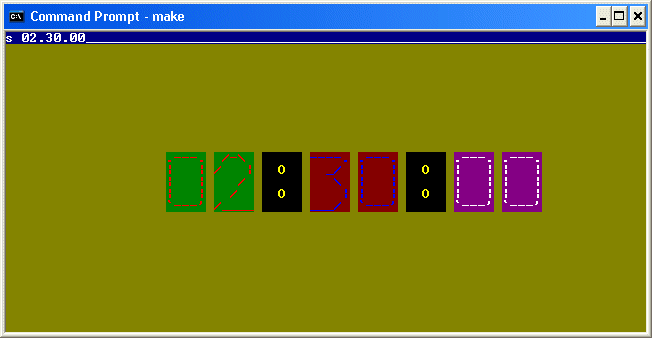

<%
title = "ECE 291 - MP3"
subtitle = "MP3"
%>
Machine Problem 3: Doomsday Countdown
| Assigned |
Thursday, 7/07/03 |
| Due Date |
Thursday, 7/17/03 |
| Purpose |
Install and write timer and keyboard interrupts.
Implement and use queues. Blit with text mode video |
| Points |
85 |
"Y2K, we're not familiar with that. However in regard to the
"Millennium Bug"---not to worry my friend, we are prepared to spray
everywhere."
One of the comments made at
http://www.duh-2000.com/
Updates - Oopps our bad...
Changed port 21h to port 20h in KbdISR
DrawMsg
should use address in DX not
StringBuffer
directly
Fixed unclear description of
RestoreISR
Blit should copy 5x5 image to video
memory not 5x6
If you prefer, you can use INT 21h to
install and restore your ISR's. See InstallISR and RemoveISR for more
details
The notes for DisplayString have been
updated to make them clear
In DisplayTime changed 9 hours to 99
hours
Introduction
Timing is of the essence. Imagine what it would be like if
during your final exam, you had absolutely no idea what time you have left...
and what better way than to be able to produce a countdown
clock of your own to use during the ece291 final exam?
You will therefore be asked to design
an mp that mimics the countdown clock of doom.
Problem Description
Your program is required to:
-
Install and uninstall a timer and keyboard ISR
-
Code a keyboard ISR
-
Blit images to text mode video
Reading : Chapter 10 and 11 (I/O Devices and Graphics)
Program Specification
The program accepts four commands: r, s, p, and ESC.
| r |
Resume: resume countdown |
| s HH.MM.SS |
Set: Set a new countdown time |
| p |
Pause: pauses the countdown |
| ESC |
Exit and return to DOS |


MP3 Program Assignment
In this machine problem, the main procedure is provided for you; however, you
must write the code to replace the library procedures. You will replace these
procedures from the LIBMP3 library by commenting out the statements calling the
library procedure and adding your code. Each procedure that you write should
match the output of the library code exactly. Each of the function calls and
their functionality is described below in the Procedures section. The
best way to get a feel for the program is to run it to see how it is supposed
to operate. You can also edit the test file to see how various changes will
affect the program execution.
The program can be run by typing mp3 at the command prompt.
Hints
-
The LIBMP3 file contains executable library functions for each of the routines
that you need to implement. This allows you to run the program and understand
how it works before you implement it. You can test your program with any
combinations of your own code and library functions. You will only receive
credit, however, for the routines that you implement yourself.
-
When debugging your code in TD, you will find it helpful to use the memory
window to show you the memory location of the file and strings. You can also
use the watch window to keep track of variables in your code.
-
Do not assume that the file starts at memory location 0.
-
You may define new variables as needed.
-
Be very careful if you call another procedure not to destroy registers that the
calling procedure uses.
-
START EARLY!
There are a total of 10 functions you have to write, including the main
function. Time, you see, IS of the essence. You will be writing the
main function in this MP, points will be awarded accordingly as to how you
separate your functions.
-
You need to preserve register values in all of the procedures you write.
To do this, push all the registers you use in the procedure at the beginning of
the procedure. Then, pop them all in reverse order at the end of the
procedure (right before you ret).
-
You need to create function headers for each of the functions you write.
Function headers should include the name of the function, the list of inputs to
the function, the list of the outputs, and any functions that the function
calls. You will lose points if you do not do this!
-
We provided you with a library timer ISR. Take a look at the code, it may make
writing the keyboard ISR much more simple.
-
Monitor the webboard for
clarifications and help.
Procedures
This assignment has four procedures. You will receive credit by replacing each
of these four procedures listed below with your own code.
| InitVideo |
-
Initialize mode 03h text mode video.
-
Inputs:
-
Outputs:
-
Calls:
int 10h
-
Notes:
-
Set screen to 03h video mode
-
Clear screen (scrolling the screen can accomplish this for you),
(so can setting
the video mode -- you don't need need to worry about
matching the ugly background color)
-
Hide cursor (moving the cursor off the screen will suffice)
-
Section 11.3 (page 113) of the lab manual has information on setting the video
mode
-
Points: 10
|
| InstallISR |
-
Saves the old interrupt service routines and installs the modified timer and
keyboard service routines.
-
Inputs: cs, TmrISR, KbdISR, Interrupt vector table
-
Outputs: Interrupt Vector Table, SavKSeg, SavKOff, SavTSeg, SavTOff
= addresses of old interrupt vector segments and offsets
-
Calls: None
-
Notes:
-
There are
two ways to install the interrupts, accessing the
interrupt vector table directly, or using
INT
21h to do some of the work for you. Using
INT
21h was the method covered in class. Feel free
to use either method or any combination of both for
the MP.
-
Use 1Ch for the timer interrupt and 9 for the
keyboard interrupt
-
Remember you
MUST
disable interrupts while changing the interrupt vector table.
(only
applies if you are accessing the interrupt table
directly.)
-
You must use the ports to set the timing of the timer interrupt
-
Set interval of the timer interrupt 10msec. Use
timer 0. Use Timer Mode 3, You must write the
timer controller ports to do this
-
for you. See section 10.3 (p 104) in the lab manual about this.
-
Points: 10
|
| RestoreISR |
-
Restores the old
keyboard and timer interrupt service routines.
-
Inputs: SavKSeg, SavKOff, SavTSeg, SavTOff = addresses of old
interrupt vector segments and offsets
-
Outputs: Interrupt Vector Table
-
Calls: None
-
Notes:
-
There are
two ways to install the interrupts, accessing the
interrupt vector table directly, or using
INT
21h to do some of the work for you. Using
INT
21h was the method covered in class. Feel free
to use either method or any combination of both for
the MP.
-
Remember you
MUST
disable interrupts while changing the interrupt vector table.
(only
applies if you are accessing the interrupt table
directly.)
-
Points: 5
|
| Blit |
-
Copy image of 5x5 character from memory to the screen.
-
Inputs:
-
DL = character to blit to screen (0-9, for the numbers 0-9, 10 for ':')
-
DH = attribute to blit character with
-
AL = row that top of image should begin on (numbering starts from row 0)
-
AH = column that left of image should begin on (numbering starts from col 0)
-
Outputs:
-
Writes to memory mapped video
-
Calls: None
-
Notes:
-
Warning: PUSHA and POPA do NOT push/pop the ES register
-
Must write characters to screen using memory mapped video,
DO NOT
use any INT 10h function to draw to the screen
-
Look at section 11.1 (109+) in the lab manual for information on directly
writing memory.
-
Use the lookup table (CharTable) to get the addresses of the images to be drawn
to the screen.
-
If you want to see where the characters are defined look to the file
CharTable.inc
-
Points: 10
|
| GetStr |
-
Get user input and writes it to a buffer.
-
Inputs:
-
InputChar = ASCII value of keyboard input.
-
InputReady = 1 if there is InputChar contains a new character, 0 otherwise
(from KbdISR)
-
CharCount = used to keep track of the number of character that are in the
buffer.
-
STRLEN = the number of bytes StringBuffer can hold.
-
Outputs:
-
InputReady = resets InputReady to 0 upon completion of GetStr
-
CharCount = used to keep track of the number of character that are in the
buffer.
-
StringBuffer = buffer to store input to.
-
AX = appropriate action to take.
-
Calls: None
-
Notes:
-
Works like GetStr from mp2, except
-
it gets keyboard input from 1 byte queue InputChar. (assuming there is one)
-
it does not wait for enter (CR) to be pressed before returning
-
Checks for available input (use InputReady to determine this), if no new input,
set AX=0 and exit GetStr.
-
If there is available input Adds input from InputChar to the string in
StringBuffer, increments CharCount, and sets InputReady back to 0.
-
Before returning, always terminate string in StringBuffer with '$',
and reset InputReady to 0, and set the following:
-
If the ESC key is
pressed, return
AX=3.
-
If enter (CR)
pressed,
reset CharCount to 0 and return AX=2
-
If there is a change to the string, return AX=1.
-
If no
input,
return AX=0.
-
Remember not to write more characters to the StringBuffer than it can hold
(this includes the '$' at the end of the string )
-
Points: 10
|
| KbdISR |
-
Interrupt service routine to handle keyboard interrupt events
-
Inputs:
-
Outputs:
-
InputChar = ASCII value of keyboard input.
-
InputReady = set to 1 to denote there is InputChar contains a new character
-
Calls:
-
Notes:
-
Read scancode from keyboard port
-
Ignore key release events
-
Convert scancode to ASCII using qwerty lookup table
-
Put new character in InputChar
-
Set InputReady to 1
-
Acknowledge PIC (port 20h)
-
Remember that the DS is undefined when your interrupt service routine gets
triggered
-
Section 10.1.2 of the lab manual has sample code that may be helpful take take
a look at
-
Points: 10
|
| DrawMsg |
-
Echoes the String in StringBuffer and draw it to the first line of the screen.
-
Inputs:
-
DX - address
to buffer that contains '$'-terminated string
-
Outputs:
-
Calls:
-
Notes:
-
Writes to video memory directly to echo the input characters instead of using
dspout, (use white text on a blue
background)
-
Writes onto the top line of the screen.
-
Use memory mapped video. Do not use int 10h function.
-
When DrawMsg encounters a '$' character, prints out underscores i.e.
'_' from that position to the end of the top line
-
Points: 10
|
| RestoreVideo |
-
Moves Cursor back to top left corner of the Screen.
-
Notes:
-
Usually causes an error when exiting the program if
you do not move the cursor back on the screen.
-
Points: 5
|
| DisplayTime |
-
Procedure to convert and display time.
-
Inputs:
-
Sec = number of seconds remaining on clock
-
Min = number of minutes remaining on clock
-
Hour = number of hours remain on clock (assume there can't be more than
99 hours
on clock
-
Outputs:
-
Calls: Blit, binasc (optional)
-
Notes:
-
Uses Hour, Min,
and Sec to display the time in the
HH:MM:SS
format.
-
Print out the number time by using Blit to display each number to the screen
-
For Blit use different attributes for the characters,
-
make the hours (HH) light red on a green background. Position The first Hour
Digit to begin at Row 10 and Col 20
-
make the minutes (MM) light blue on a red background
-
make the seconds (SS) white on a magenta background
-
make the both colons (:) yellow on a black background
-
Points: 10
|
| Main |
-
Decodes user input to set, pause, resume, and clear timer. Uses TickCount
to measure time.
-
Inputs: TickCount, input from GetStr
-
Outputs: PauseClock
-
Calls: GetStr, DisplayTime, DrawMsg, InitVideo, InstallISR, RestoreISR ,
RestoreVideo
-
Notes:
-
Call InitVideo and InstallISR at the beginning of main
-
Continuously loop checking if changes need to made to the time or for new user
input
-
Use GetStr to handle user input
-
if AX gets 3, exits the program, calling RestoreISR and RestoreVideo.
-
when AX gets 1:
-
when AX gets 2, checks to see if command received was p, r or s
-
For s :
-
checks receives timing input in the format : HH.MM.SS
-
Needs to accept input in the form of HH.MM.SS
and set Hour, Min, and Sec.
-
Make sure Hour is between 0 and 99, Min is between 0 and 59, and Sec is between
0 and 59.
-
Don't change the time if any of the parameters are invalid. Display invalid
message.
-
Calls DisplayTime to show the new time.
-
For p :
-
Sets the PauseClock to 1 to stop TickCount
-
For r :
-
Sets the PauseClock to 0 to resume TickCount
-
When TickCount is greater than 100.
-
Subtract 100 from TickCount (don't just set TickCount to 0)
-
Decrement clock if there is any remaining time.
-
Calls DisplayTime to show the updated time
-
Points: 10
|
Procedure
-
You will begin this MP with the following files:
-
MP3.ASM: Program Framework
-
Makefile: Specifies how and when programs are assembled and
linked.
-
LIBMP3.LIB: Library functions for MP3
-
LIB291.LIB: General-purpose library functions
-
You may copy these files from the network drive to your home directory with the
following command:
xcopy /s V:\ece291\mp3 W:\mp3
or download the files from this server as mp3.zip
-
Add your code to MP3.ASM.
-
Assemble and link your program by typing make. This command
reads the Makefile then invokes NASM and TLINK to build an executable program.
-
Use TD debugger to find and correct program errors.
Final Steps
-
Demonstrate your MP3.EXE to a TA or to the instructor. The TA or
instructor will verify that your program produces the correct output.
-
Be prepared to answer questions about any aspect of the operation of your
program. The TAs will not accept an MP if you cannot fully explain the
operation of your code and details of your implementation. Delayed MPs will be
subject to late penalties as described in the course syllabus (10pts/day).
-
The TA will handin your MP online.
MP1.ASM (program framework)
;MP3 -Doomsday Down Counter
; Your Name
; Today's Date
;
; Josh Potts, Summer 2003
; Author: Derek King - July 7 2003
; University of Illinois, Urbana-Champaign
; Dept. of Electrical and Computer Engineering
;
; Version 1.0
BITS 16
;====== SECTION 1: Define constants =======================================
CR EQU 0Dh ; Carriage return
LF EQU 0Ah ; Line feed
BS EQU 08h ; Backspace
KVEC EQU 0024h ; Location of Keyboard Vector
TVEC EQU 0070h ; Location of User Timer Vector
ROWS EQU 25 ; Number of rows on screen
COLS EQU 80 ; Number of columns on screen
STRLEN EQU 16 ; Capacity of input string
;====== SECTION 2: Declare external procedures ============================
EXTERN ascbin, binasc, kbdin, dspout, dspmsg, mp3xit
EXTERN libMain, libInstallISR, libRestoreISR, libInitVideo, libDrawString
EXTERN libTmrISR, libKbdISR, libGetStr, libDrawMsg
EXTERN libBlit, libDisplayTime, libRestoreVideo
GLOBAL Main, InstallISR, RestoreISR, InitVideo, DrawString
GLOBAL TmrISR, KbdISR, GetStr, DrawMsg
GLOBAL Blit, DisplayTime, RestoreVideo
GLOBAL SavKOff, SavKSeg, SavTOff, SavTSeg, TickCount, PauseClock, Qwerty
GLOBAL CharCount, StringBuffer, MP3Msg, ErrMsg, CmdMsg, CharTable, Hour, Min, Sec
GLOBAL InputChar, InputReady
;====== SECTION 3: Define stack segment ===================================
SEGMENT stkseg STACK ; *** STACK SEGMENT ***
RESB 64*8
stacktop:
RESB 0 ; NASM bug workaround
;====== SECTION 4: Define code segment ====================================
SEGMENT code ; *** CODE SEGMENT ***
;====== SECTION 5: Declare variables for main procedure ===================
MP3Msg db 'MP3 Doomsday Downcounter - Summer 2003','$'
ErrMsg db 'Input parameter error, input must be in the form HH.MM.SS','$'
CmdMsg db 'Not a valid command','$'
Hour DB 3 ;number of hours remaining
Min DB 0 ;number of minutes remaining
Sec DB 0 ;number of seconds remaining
TickCount DW 0 ;
PauseClock DB 0 ;Pause flag = 0 not paused, 1 paused
CharCount DW 0 ; Number of characters in the input buffer
StringBuffer RESB STRLEN ; Buffer to store user input
SavTSeg RESW 1 ;storage for addresses of
SavTOff RESW 1 ;old interrupt vectors
SavKSeg RESW 1
SavKOff RESW 1
InputChar RESB 1 ;ASCII value of input from keyboard
InputReady DB 0 ;Set to 1 if there is new input, 0 otherwise
%include "CharTable.inc" ;ASCII characters used to blit to the screen
; You may declare additional variables here
;====== SECTION 6: Program initialization =================================
..start:
MOV AX, CS ; Initialize Default Segment register
MOV DS, AX
MOV AX, stkseg ; Initialize Stack Segment register
MOV SS, AX
MOV SP, stacktop ; Initialize Stack Pointer register
;====== SECTION 7: Your subroutines =======================================
Main:
call libMain
call mp3xit
GetStr:
call libGetStr
ret
DrawMsg:
call libDrawMsg
ret
Blit:
call libBlit
ret
DisplayTime:
call libDisplayTime
ret
InstallISR:
call libInstallISR
ret
RestoreISR:
call libRestoreISR
ret
InitVideo:
call libInitVideo
ret
RestoreVideo:
call libRestoreVideo
ret
TmrISR:
;if clock is not paused increment tick count
cmp byte [cs:PauseClock], 0
jne .done
inc word [cs:TickCount]
.done
iret
KbdISR:
jmp libKbdISR
;Bellow is a lookup table for a qwerty layout for a keyboard
LSHIFT equ 6
RSHIFT equ 7
BKSP equ 8
ENTR equ 13
ESC equ 27
DEL equ 10
HOME equ 11
UP equ 24
PGUP equ 12
LEFT equ 27
RIGHT equ 26
END equ 14
DOWN equ 25
PGDN equ 15
INS equ 16
SPACE equ 17
Qwerty:
db 0 ; filler
db ESC,'1','2','3','4','5','6','7','8','9','0','-','=',BKSP
db 0, 'q','w','e','r','t','y','u','i','o','p','[',']',ENTR
db 0,'a','s','d','f','g','h','j','k','l',';',"'","`"
db LSHIFT,'\','z','x','c','v','b','n','m',",",'.','/',RSHIFT,'*'
db 0, ' ', 0, 200,201,202,203,204,205,206,207,208,209 ; F1-F10
db 0,0 ; numlock, scroll lock
db HOME, UP, PGUP, '-'
db LEFT, 0, RIGHT, '+'
db END, DOWN, PGDN, INS
db DEL, 0; sysrq